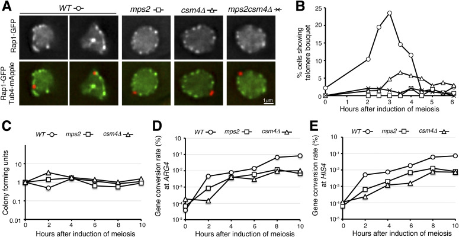
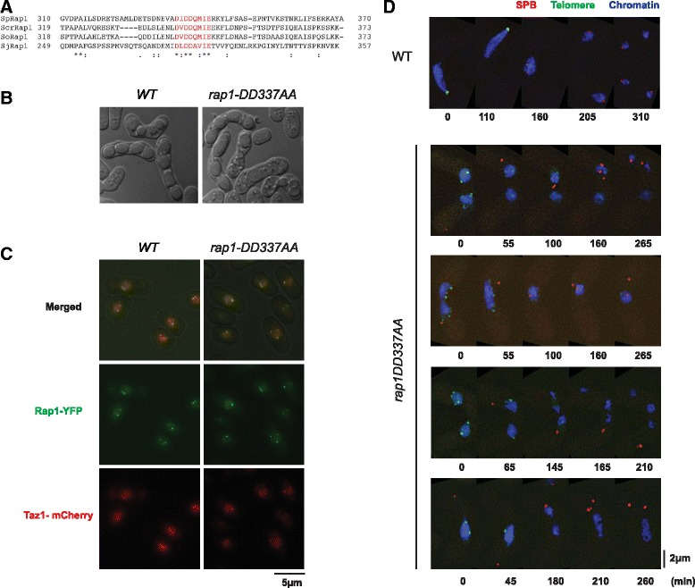

meiotic telomere bouquet
A polarized nuclear chromosome assembly in which telomeric ends and their anchoring proteins cluster within a restricted region of the nuclear envelope during meiotic prophase. Characterized in fission and budding yeast, it organizes chromosome ends while chromosome arms extend into the nucleus; its duration and tethering machinery differ between species. [DOI:10.1038/celldisc.2017.41]

NCBITaxon:4932) · Jinbo Fan, Hui Jin, Bailey A Koch, Hong-Guo Yu; CC BY 4.0, via PubMed Central; unmodified Figure 4. · CC_BY_4_0 · source: PMC PMC7536833.1 fig4 · DOI:10.26508/lsa.202000824Synonyms: telomere bouquet; chromosomal bouquet
Part of: nucleus (GO:0005634)
Has part: nuclear chromosome (GO:0000228); GO:0000781 — chromosome, telomeric region (no local record)
Components
| Component | Type | Part of / acts on | Grounding | Genes | Stoichiometry | Essential | Role |
|---|---|---|---|---|---|---|---|
| telomere | Dna | part of | SO:0000624 | UNKNOWN | Ends of the linear nuclear chromosomes brought together at the nuclear periphery.
| ||
| TE2IP/Rap1 | Protein | part of | InterPro:IPR039595 | RAP1, rap1 | UNKNOWN | Telomere-associated scaffold class in both curated yeast systems.
| |
| Taz1-like telomere-binding protein | Protein | part of | Reviewed label only (reviewed name; no accession asserted) | taz1 | UNKNOWN | Fission-yeast chromosome-end DNA-binding constituent.
| |
| Bqt1-like meiotic telomere connector | Protein | part of | Reviewed label only (reviewed name; no accession asserted) | bqt1 | UNKNOWN | Fission-yeast constituent of the Rap1-to-Sad1 bridge that maintains the bouquet.
| |
| Bqt2-like meiotic telomere connector | Protein | part of | Reviewed label only (reviewed name; no accession asserted) | bqt2 | UNKNOWN | Partner of Bqt1 in the fission-yeast telomere-to-envelope bridge.
| |
| SUN domain-containing protein 1-5 | Protein | part of | InterPro:IPR045119 | MPS3, sad1 | UNKNOWN | Inner-nuclear-membrane tether class represented by budding-yeast Mps3 and fission-yeast Sad1.
| |
| Monopolar spindle protein 2 | Protein | part of | InterPro:IPR031433 | MPS2 | UNKNOWN | Budding-yeast outer-membrane linker joining telomere-associated Mps3 to Csm4.
| |
| Csm4-like meiotic telomere tether factor | Protein | part of | Reviewed label only (reviewed name; no accession asserted) | CSM4 | UNKNOWN | Budding-yeast telomere-associated membrane constituent required for normal clustering in the cited assay.
| |
| Non-disjunction protein 1 | Protein | part of | InterPro:IPR062583 | NDJ1 | UNKNOWN | Budding-yeast telomere-associated connector involved in membrane-tether recruitment.
| |
| Kms1-like nuclear-envelope tether protein | Protein | part of | Reviewed label only (reviewed name; no accession asserted) | kms1 | UNKNOWN | Outer-membrane constituent of the established fission-yeast Sad1-Kms1 bridge.
|
Organism-specific protein examples
Named proteins in which each component's role was established, with the organism the evidence comes from. The component above is the taxon-agnostic family; these are the specific entries behind it.
TE2IP/Rap1
| Accession | Protein | Gene | Organism | Entry |
|---|---|---|---|---|
UniProtKB:P11938 | DNA-binding protein RAP1 | RAP1 | Saccharomyces cerevisiae S288C (NCBITaxon:559292) | REVIEWED |
Role and evidence (2 references)Reference-sequence exemplar, not a claim that the reference strain was the exact experimental stock.
| ||||
UniProtKB:Q96TL7 | DNA-binding protein rap1 | rap1 | Schizosaccharomyces pombe 972h- (NCBITaxon:284812) | REVIEWED |
Role and evidence (2 references)Reference-sequence exemplar, not a claim that the reference strain was the exact experimental stock.
| ||||
Taz1-like telomere-binding protein
| Accession | Protein | Gene | Organism | Entry |
|---|---|---|---|---|
UniProtKB:P79005 | Telomere length regulator taz1 | taz1 | Schizosaccharomyces pombe 972h- (NCBITaxon:284812) | REVIEWED |
Role and evidence (2 references)Reference-sequence exemplar, not a claim that the reference strain was the exact experimental stock.
| ||||
Bqt1-like meiotic telomere connector
| Accession | Protein | Gene | Organism | Entry |
|---|---|---|---|---|
UniProtKB:Q92358 | Telomere bouquet protein 1 | bqt1 | Schizosaccharomyces pombe 972h- (NCBITaxon:284812) | REVIEWED |
Role and evidence (2 references)Reference-sequence exemplar, not a claim that the reference strain was the exact experimental stock.
| ||||
Bqt2-like meiotic telomere connector
| Accession | Protein | Gene | Organism | Entry |
|---|---|---|---|---|
UniProtKB:Q9US52 | Telomere bouquet protein 2 | bqt2 | Schizosaccharomyces pombe 972h- (NCBITaxon:284812) | REVIEWED |
Role and evidence (2 references)Reference-sequence exemplar, not a claim that the reference strain was the exact experimental stock.
| ||||
SUN domain-containing protein 1-5
| Accession | Protein | Gene | Organism | Entry |
|---|---|---|---|---|
UniProtKB:P47069 | Spindle pole body assembly component MPS3 | MPS3 | Saccharomyces cerevisiae S288C (NCBITaxon:559292) | REVIEWED |
Role and evidence (2 references)Reference-sequence exemplar, not a claim that the reference strain was the exact experimental stock.
| ||||
UniProtKB:Q09825 | Spindle pole body-associated protein sad1 | sad1 | Schizosaccharomyces pombe 972h- (NCBITaxon:284812) | REVIEWED |
Role and evidence (2 references)Reference-sequence exemplar, not a claim that the reference strain was the exact experimental stock.
| ||||
Monopolar spindle protein 2
| Accession | Protein | Gene | Organism | Entry |
|---|---|---|---|---|
UniProtKB:P53159 | Monopolar spindle protein 2 | MPS2 | Saccharomyces cerevisiae S288C (NCBITaxon:559292) | REVIEWED |
Role and evidence (2 references)Reference-sequence exemplar, not a claim that the reference strain was the exact experimental stock.
| ||||
Csm4-like meiotic telomere tether factor
| Accession | Protein | Gene | Organism | Entry |
|---|---|---|---|---|
UniProtKB:Q08955 | Chromosome segregation in meiosis protein 4 | CSM4 | Saccharomyces cerevisiae S288C (NCBITaxon:559292) | REVIEWED |
Role and evidence (2 references)Reference-sequence exemplar, not a claim that the reference strain was the exact experimental stock.
| ||||
Non-disjunction protein 1
| Accession | Protein | Gene | Organism | Entry |
|---|---|---|---|---|
UniProtKB:Q12366 | Non-disjunction protein 1 | NDJ1 | Saccharomyces cerevisiae S288C (NCBITaxon:559292) | REVIEWED |
Role and evidence (2 references)Reference-sequence exemplar, not a claim that the reference strain was the exact experimental stock.
| ||||
Kms1-like nuclear-envelope tether protein
| Accession | Protein | Gene | Organism | Entry |
|---|---|---|---|---|
UniProtKB:P87245 | Karyogamy meiotic segregation protein 1 | kms1 | Schizosaccharomyces pombe 972h- (NCBITaxon:284812) | REVIEWED |
Role and evidence (2 references)Reference-sequence exemplar, not a claim that the reference strain was the exact experimental stock.
| ||||
Canonical examples
NCBITaxon:4932Saccharomyces cerevisiae — Native meiotic assays use SK1-derived strains. The S288C mitotic reconstitution is not itself an ordinary meiotic bouquet; S288C UniProt entries serve only as sequence references. [DOI:10.26508/lsa.202000824]NCBITaxon:4896Schizosaccharomyces pombe — Live-cell meiotic prophase and conditional Bqt1-degradation experiments; bouquet persistence is distinguished from the period of horsetail movement. [DOI:10.1038/celldisc.2017.41]
Functions
- telomere organization
GO:0032200— Polarized organization of chromosome ends during meiotic prophase.DOI:10.26508/lsa.202000824Direct imaging of Rap1-marked peripheral clusters.DOI:10.1038/celldisc.2017.41Taz1-marked telomeres remain clustered near the SPB during prophase.
- Support of homolog pairing and meiotic recombination — The budding-yeast tether/bouquet system supports efficient homolog pairing and gene conversion, without making clustering alone the exclusive cause.
DOI:10.26508/lsa.202000824Mps2-depleted and csm4-deleted cells show delayed pairing at LYS4 and reduced gene conversion at ARG4/HIS4. Tethering, motion and clustering effects are not experimentally isolated from one another.
- Support of meiotic spindle formation — Maintained fission-yeast telomere-SPB attachment supports normal SPB behavior and spindle formation.
DOI:10.1038/celldisc.2017.41Premature Bqt1 destruction increases spindle defects. Some bouquet-deficient cells still divide successfully, so no absolute requirement or universal fungal function is asserted.
Mechanism graphs
Budding-yeast tether recruitment and bouquet formation (ASSEMBLY)
| Subject | Predicate | Object | Evidence |
|---|---|---|---|
| Ndj1-class connector | supports | Mps2 association with chromosome ends |
|
| Mps3 SUN tether | supports | Mps2 association with chromosome ends |
|
| Mps2 linker | supports | Csm4 association with chromosome ends |
|
| Mps2 linker | supports | Meiotic telomere clustering |
|
| Csm4 tether factor | supports | Meiotic telomere clustering |
|
| Meiotic telomere clustering | produces | Meiotic telomere bouquet |
|
Fission-yeast bouquet maintenance and meiotic spindle function (FUNCTION)
| Subject | Predicate | Object | Evidence |
|---|---|---|---|
| Bqt1 connector | supports | Maintenance of the telomere-SPB connection |
|
| Maintenance of the telomere-SPB connection | supports | Timely CDK1-cyclin B accumulation at the SPB |
|
| Maintenance of the telomere-SPB connection | supports | Functional meiotic spindle formation |
|
Discussions
- CURATION_TODO (RESOLVED): Keep the chromosome assembly distinct from its formation process and tether subcomplexes.
- CURATION_TODO (OPEN): Find exact whole-protein family identifiers for Taz1, Bqt1, Bqt2, Csm4 and Kms1.
- KNOWLEDGE_GAP (OPEN): Resolve the core-versus-accessory placement of Csm4 within the smaller t-LINC complex.
- CURATION_TODO (RESOLVED): Keep species-specific components and assembly requirements separate.
- CURATION_TODO (RESOLVED): Distinguish telomere tethers from drivers, general envelope anchors and downstream machinery.
- KNOWLEDGE_GAP (OPEN): Identify the physiological release mechanism without equating correlation with causation.
- CURATION_TODO (RESOLVED): Avoid making clustering the unique cause of every mutant phenotype.
- CURATION_TODO (RESOLVED): Preserve experimental taxon and measurement scope.
- CURATION_TODO (RESOLVED): Identify which primary sources were read in full relevant sections and which were abstract-only.
- CURATION_TODO (RESOLVED): Keep figure reuse permissions separate from data waivers and experimental panels.
More images

NCBITaxon:4896) · Hanna Amelina, Shaan Subramaniam, Vera Moiseeva, Christine Anne Armstrong, Siân Rosanna Pearson, Kazunori Tomita; CC BY 4.0, via PubMed Central; unmodified Figure 4. · CC_BY_4_0 · source: PMC PMC4660835.1 Fig4 · DOI:10.1186/s12915-015-0149-xDatasets
- Phosphorylation of S.pombe Rap1 analysed by LC-MS/MS (
PXD001841) · PRIDE · PROTEOMICS
Organism: Schizosaccharomyces pombe · Platform: LC-MS/MS, LTQ Orbitrap VelosNative PRIDE API identity, organism, experimental description and linked DOI/PMID verified on 2026-10-05. Partial submission; no raw spectra were downloaded or independently reanalyzed. A phosphorylation catalog is not proof that phosphorylation triggers bouquet dispersal.
Evidence
DOI:10.26508/lsa.202000824Fan et al. 2020, PMID 32967926; native PMC7536833.1 Results, Discussion and relevant Methods read. Direct budding-yeast tether localization, co-purification, depletion, bouquet imaging and gene-conversion assays.DOI:10.1186/s12915-015-0149-xAmelina et al. 2015, PMID 26058898; native PMC4660835.1 interaction/mutagenesis Results, Discussion, Methods and deposited dataset inspected.DOI:10.1038/celldisc.2017.412017 study, PMID 29123917; native PMC5674143.1 bouquet-maintenance/function Results and Methods read. Live-cell and conditional-degradation evidence.DOI:10.1016/j.cub.2020.01.0542020 study, PMID 32059771; native PMC7181386.1 Results, Discussion and imaging/spread Methods read. Alternative Csm4 interpretation and motor-association evidence retained with limits.DOI:10.1038/s41467-025-56049-92025 study, PMID 39833200; native PMC11747273.1 telocentrosome-recruitment and natural meiotic-entry Results read. Partial mitotic recruitment is distinct from complete bouquet formation.DOI:10.1016/j.cell.2006.01.048Chikashige et al. 2006, PMID 16615890; DOI/PMID and complete abstract read via Europe PMC. Publisher access returned 403; Europe PMC lists subscription-only access. Connector claims are limited to the abstract, corroborated by later studies.GO:0032993Native protein-DNA complex definition is broader than this named assembly.GO:0005634Native nucleus definition verifies the encompassing compartment.GO:0000228Native nuclear chromosome definition; chromosomes participate in the polarized assembly.GO:0000781— chromosome, telomeric region Native chromosome, telomeric region definition denotes the grouped ends, not the whole bouquet.
Curation history
2026-10-05T18:42:59Zcodex · CREATED_RECORD — Scaffolded by scripts/new_record.py2026-10-05T18:46:29Zcodex · EXPANDED_RECORD — Added ten component classes, eleven verified protein examples, two species-scoped mechanisms, a verified proteomics dataset, two inspected CC BY figures, and explicit model and access limits.